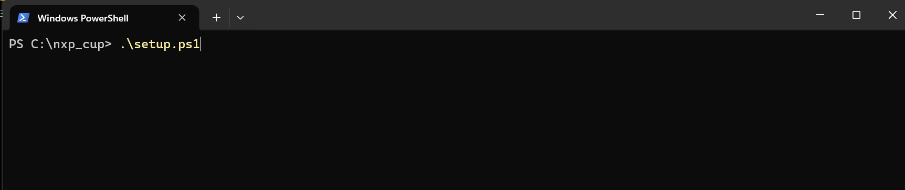
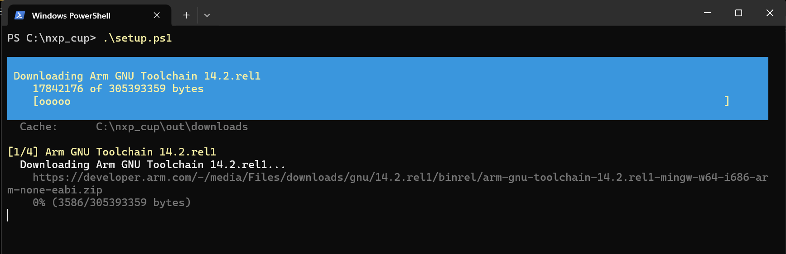
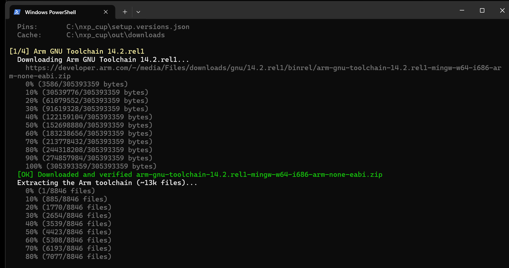
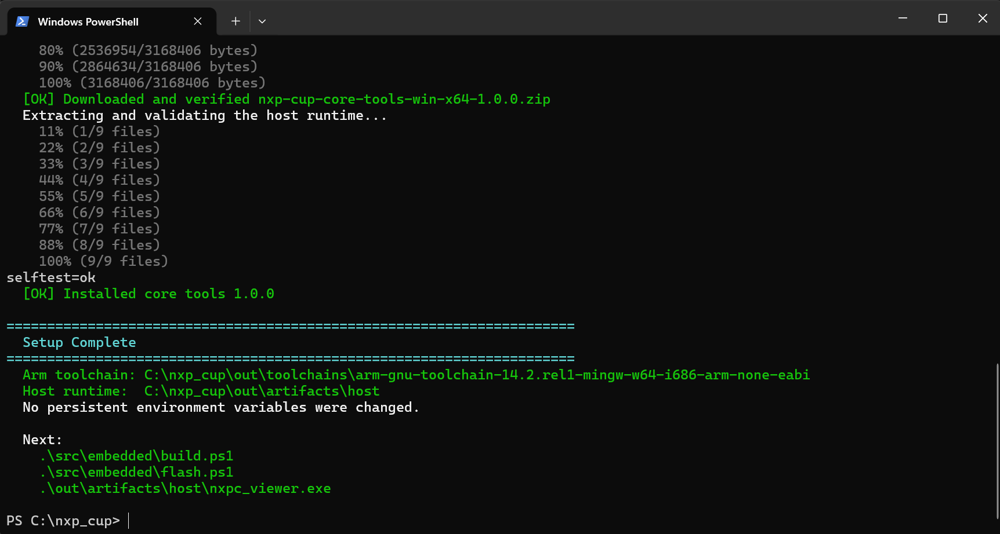

This is the authoritative Windows setup, build, flash, and viewer guide.
Type every command below in a PowerShell tab in Windows Terminal,
from the repository root—the folder containing setup.ps1.
The simplest option is to open the
course repository on GitHub,
choose Code > Download ZIP, and extract it. A short folder such
as C:\nxp_cup is recommended. Open the extracted folder that directly
contains setup.ps1, not the ZIP file itself.
If Git is already installed, cloning is also supported:
Set-Location C:\ git clone https://github.com/wavenumber-eng/nxp_cup.git nxp_cup Set-Location C:\nxp_cup
Download and run Microsoft's Visual Studio Code User Installer for Windows.
The User Installer is the normal choice and does not require administrator
access. After installation, close and reopen Windows Terminal so it can find
the new code command.
In File Explorer, open the repository folder, right-click its background,
and choose Open in Terminal. If that menu is unavailable, open
Windows Terminal, select PowerShell, and use cd to enter the folder.
Do not type the prompt itself—only the commands shown in the boxes below.
From that PowerShell tab, open the entire repository in Visual Studio Code:
code .
Accept the repository's recommended C/C++ and CMake extensions when VS Code
offers them. If code is not recognized after reopening Terminal, use
File > Open Folder in VS Code instead. VS Code is the editor;
continue to run setup, build, and flash commands in the PowerShell terminal.
First try:
.\setup.ps1
If Windows says that running scripts is disabled, permit it only in the current PowerShell window:
Set-ExecutionPolicy -Scope Process -ExecutionPolicy Bypass .\setup.ps1
Unrestricted. In the unusual case that a school or employer manages
the laptop and its policy still blocks the script, stop and ask the instructor
or IT staff rather than trying to bypass that policy.
winget may show a normal Windows installer or UAC prompt for CMake
or Ninja. If Windows blocks an installation, see Permissions and security
software below.
.\setup.ps1

.\setup.ps1 from the repository root. This example
uses C:\nxp_cup; your folder can have a different name or location.The first run installs and verifies the compiler, build system, viewer, and programming tools. The complete installed tools summary is at the end of this guide.
The Arm download is 305 MB and extracts to about 1.2 GB. Setup shows
download and extraction progress. Verified downloads are retained under
out\downloads, so later runs are fast and normally use no network.


Setup checks exact versions and SHA-256 hashes, validates every file in the host package, and runs the host self-test before replacing a working install. Do not work around a checksum failure.

.\setup.ps1 -IncludeMaintainerTools separately.
.\src\embedded\build.ps1
A successful build publishes:
out\artifacts\embedded\nxp_cup_core0.bin — normal ROM-HID programming imageout\artifacts\embedded\nxp_cup_core0.axf — debugger image with symbolsThe two normal student files are:
src\embedded\nxp_cup_core0\source\app\test_mode.c src\embedded\nxp_cup_core0\source\app\race_mode.c
If a previous build remembered another compiler or behaves unexpectedly, make one clean build:
.\src\embedded\build.ps1 -Clean
.\src\embedded\flash.ps1
The preferred path asks a running competition application to stop safely and enter the MCXN947 ROM-HID bootloader. It then validates, erases, writes, resets, and waits for the application to reconnect. J-Link is only an optional maintainer fallback.
No buttons are needed for this normal path. The running application accepts the host's boot-entry command and restarts into ROM ISP automatically.
Use this only when no valid application is running, or when the loaded application cannot accept the boot-entry command:
.\src\embedded\flash.ps1 -Backend Rom
This recovery does not require J-Link. After programming, the board should reset and return as the normal NXP Cup USB device.
.\out\artifacts\host\nxpc_viewer.exe
The viewer connects to one NXP Cup board, negotiates telemetry, and displays camera frames and named values. Its firmware field automatically finds the BIN produced by the normal build. If several matching boards are connected, remove the extras rather than guessing which one will be programmed.
# Edit test_mode.c or race_mode.c .\src\embedded\build.ps1 .\src\embedded\flash.ps1 .\out\artifacts\host\nxpc_viewer.exe
developer.arm.com and
github.com through its proxy or firewall..partial
files are not accepted as cache entries..\setup.ps1 -Force only when you intentionally want to
redownload the pinned archives.-Backend Rom; J-Link is not required for the student path.Run .\setup.ps1 again. Setup validates staging and cache contents
before installation and does not replace a known-good host runtime with an
incomplete candidate.
An instructor can provide the exact pinned Arm and core-tools ZIP files. Use:
.\setup.ps1 ` -ArmArchive D:\NxpCup\arm-gnu-toolchain-14.2.rel1-mingw-w64-i686-arm-none-eabi.zip ` -CoreToolsArchive D:\NxpCup\nxp-cup-core-tools-win-x64-1.0.1.zip
The same checksum and package validation applies offline. CMake and Ninja must already be installed when winget cannot reach its sources.
Visual Studio Code is installed manually in step 1; setup.ps1
does not install or update the editor. The normal student setup provides:
| Tool | How it is provided | Purpose and location |
|---|---|---|
| Arm GNU Toolchain 14.2.Rel1 | Pinned, downloaded, and verified by setup | Builds MCXN947 firmware under out\toolchains |
| CMake | Installed through winget if cmake is missing | Configures the firmware build; installed in Windows |
| Ninja | Installed through winget if ninja is missing | Runs the firmware build; installed in Windows |
| Core tools 1.0.1 | Pinned, downloaded, and verified by setup | Viewer, diagnostics, and ROM-HID programming under out\artifacts\host |
The core-tools folder contains:
nxpc_viewer.exe — camera, telemetry, and firmware viewernxpc_tool.exe — command-line device checks and programmingrblhost.exe — pinned NXP ROM-HID programmer used by both toolsSDL2.dll, the package manifest, documentation, and license notices-IncludeMaintainerTools additionally asks winget for
uv and LLVM-MinGW. It does not install Rust, Cargo, Visual Studio,
MCUXpresso, Ozone, or J-Link. Ordinary students do not need those maintainer
tools.